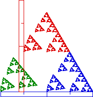

| Finally to determine the translations, pick a point in the fractal, say the lower left corner, and measure the horizontal and vertical displacements of the corresponding points of each of the three pieces. |
| For the green piece, the
lower left corner is in the same location as the lower left
corner of the whole shape, so |
| For the blue piece, the lower left corner is
at the same height, but has been moved horizontally by
1 inch. So for the blue piece,
|
| For the red piece we measure
|
|  |
Return to Measuring IFS Pieces.